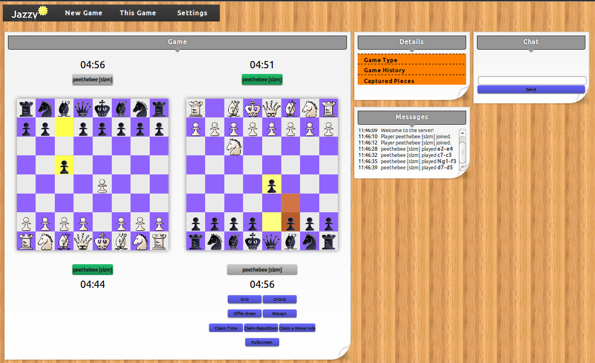

What is Jazzy?

The Jazzy server component is handling chess games. It is made with Python technology and is special because it supports a lot of chess variants out of the box. Moreover it is designed to be really, really flexible to allow anyone with a little knowledge about programming (and chess) to build their own variants. You'd probably wonder how many things you can tweak and change in a game which seems already perfect the way it is. Nevertheless many of the variants are great fun!
With Jazzy you also have access to a web UI based on modern technologies. HTML5, CSS3, Canvas, and Websockets are only a few buzzwords you can see in real life here. You are not bound to any particular operating system, platform (try your smartphone!) or browser, just don't use Mosaic... The board for example supports drag-and-drop as well as click style input with your mouse. All the moves are transfered instantly to the other players and flexible clocks are in place.
How to use it
The installation instructions for Ubuntu Linux can be found here.
Contribute
Jazzy is licensed under the terms of GNU AGPL 3.
That means that you are allowed and encouraged to fork the project on GitHub and issue pull-requests. I'd gladly add more variants or fixes you have come up with!
History and Roadmap
The commit history can be found on GitHub.Due to the existance of life, this project will likely receive only few to no updates until approximately November 2012.
Authors and Contributors
Johannes Mitlmeier, RapIt.